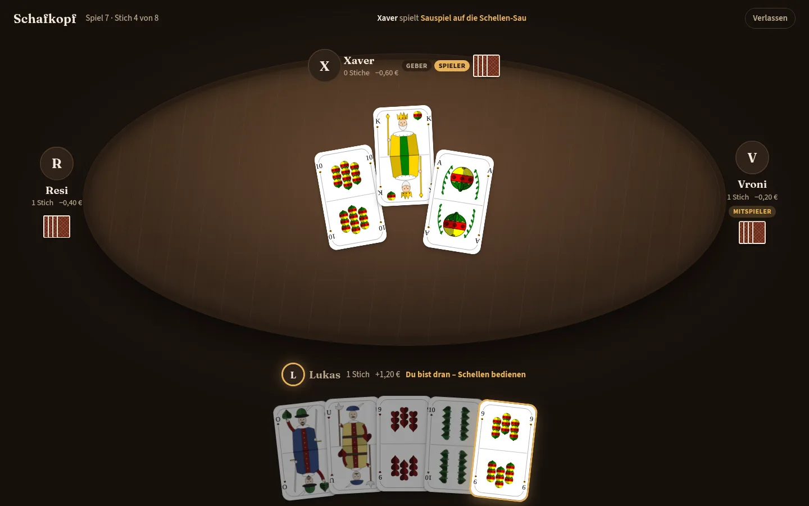
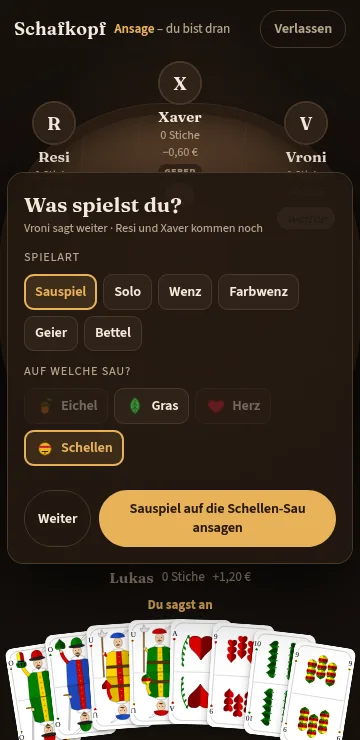
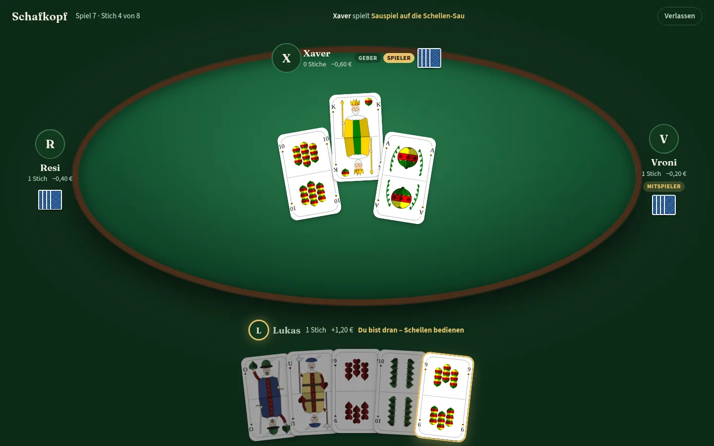
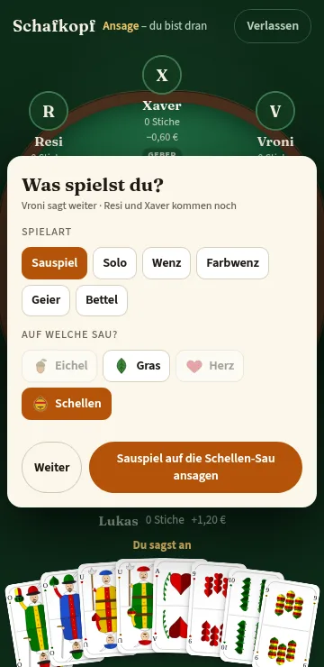
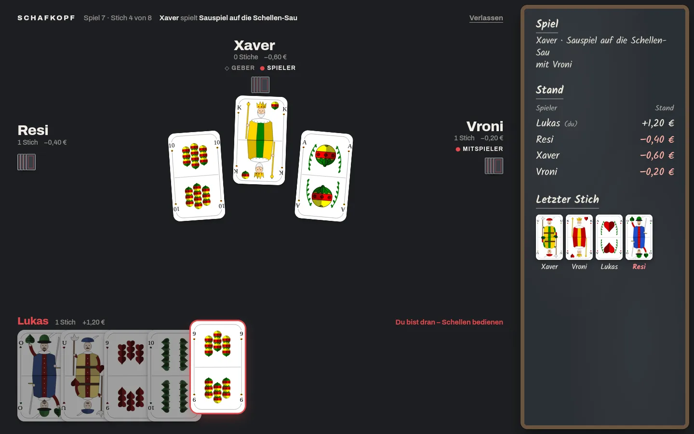
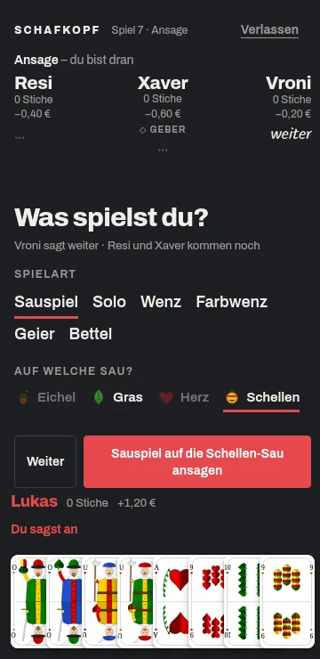

Schafkopf · Drei Richtungen für den Spieltisch
Arbeitspaket D1. Gewählt: B · Kartentisch (festgehalten
in docs/DESIGN.md). Alle drei sind dunkel, für Desktop zuerst gedacht und
nutzen dasselbe Blatt: Zahlenkarten als SVG von einem Freund von Lukas, Unter, Ober, König
und Sau in diesem Stil neu gezeichnet (alle Karten ansehen). Unterschiedlich ist der Tisch drumherum. Die blaue Richtung „Rauten“ ist verworfen. In
jedem Entwurf oben zwischen Ansage, laufendem Stich und Ergebnis sowie Handy und Desktop
umschalten; im Stich lässt sich die hervorgehobene Karte spielen, in der Ansage Spielart und
Farbe wählen.
A · Stube
Warm wie eine Wirtsstube am Abend, aber ohne Deko: Nussholz, Lampenlicht über einem runden Tisch, Bernstein als Akzent, Serifenschrift für Namen. Keine Seitenleiste – der Tisch steht allein.


B · Kartentisch ✓ gewählt
Das Grün aus dem jetzigen Stand, weiterentwickelt: grüner Filz als Einlage in einem dunklen Holzrahmen wie ein Kartentisch im Wirtshaus, Dialoge auf hellem Papier wie bisher, Messing als Akzent. Aufbau wie A.


C · Schiefer
Schlicht und typografisch: flaches Graphit, große Namen, Herzrot als einziges Signal. Gegen das Kühle steht die Schiefertafel mit Stand und Abrechnung in Kreideschrift.

